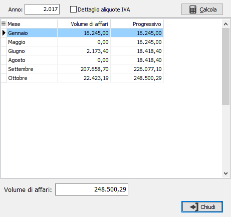
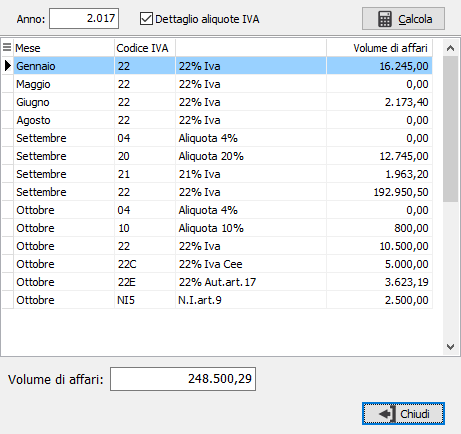

Controllo volume di affari
Il programma consente di analizzare il volume di affari e segnala se si supera la soglia prevista in configurazione per la gestione dell'IVA di cassa. L'analisi può essere sintetica oppure dettagliata per aliquota spuntando la relativa casella. Premendo il pulsante Calcola vengono esposti i dati in griglia e viene riportato il totale del volume di affari; se questo supera il valore in configurazione viene esposto in rosso.

